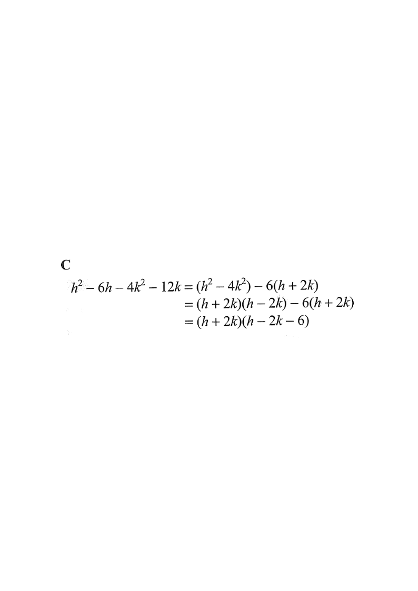

Step map: group → common factor → finish.
Factorise $h^2 - 6h - 4k^2 - 12k$.

Look for a difference of two squares and a shared factor.
$h^2 - 6h - 4k^2 - 12k \;=\; \underbrace{(h^2 - 4k^2)}_{\text{D.O.S.}} \;-\; \underbrace{(6h + 12k)}_{\text{common }6}$
Hint: rearranging $h^2 - 4k^2$ is natural because $h^2$ and $4k^2$ are both perfect squares.
$h^2 - 4k^2 = (h+2k)(h-2k)$ (difference of squares)
$6h + 12k = 6(h+2k)$ (take out the common factor $6$)
So: $h^2 - 6h - 4k^2 - 12k = (h+2k)(h-2k) - 6(h+2k)$
Hint: watch for the new common bracket $(h+2k)$ appearing in both parts.
Both terms contain the bracket $(h+2k)$:
$(h+2k)(h-2k) - 6(h+2k) = (h+2k)\big[(h-2k) - 6\big]$
Hint: this is the key move — a common binomial factor, not just a common number.
$(h+2k)\big[(h-2k) - 6\big] = (h+2k)(h - 2k - 6)$
Check by expanding:
$(h+2k)(h-2k-6) = h^2 - 2hk - 6h + 2kh - 4k^2 - 12k$
$= h^2 - 6h - 4k^2 - 12k$ ✓ (the $-2hk$ and $+2kh$ terms cancel)
Hint: the answer must match the original expression exactly — this confirms the factorisation.
Question. Factorize \(p^{2}-3p-9q^{2}-9q\).